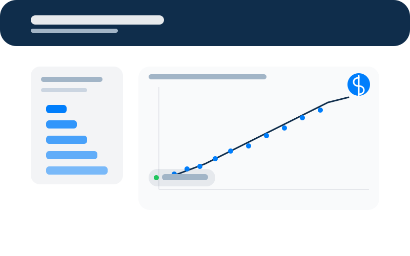

Intelligent system that automates document verification using AI models to detect anomalies, validate fields and reduce manual workload.
Explore my work across cyber security, software development, data analysis, AI systems and graphic design.
Intelligent system that automates document verification using AI models to detect anomalies, validate fields and reduce manual workload.
An AI‑powered chatbot that makes a company website more interactive and user‑friendly, increasing engagement by 20%. It helps visitors quickly find information through natural conversations and learns from past questions to provide more personalised, relevant answers over time.

A machine learning model that predicts salary based on years of experience. I compared several algorithms to find the most accurate approach, while also checking for bias in the data and predictions to keep the system as fair and responsible as possible.

Design and development of a responsive company website for Greenowl, integrating branding, service overviews and contact flows.
An automated tool that continuously searches for cheap flights from Manchester and sends curated SMS alerts with key trip details. Each message includes date, time, price, duration and airports so you can quickly decide whether to book.
A fast‑paced arcade‑style game where you guide a turtle across a busy road without getting hit. Each level increases the speed and number of obstacles, keeping the challenge engaging and rewarding.
An in‑depth forensic investigation of credit scoring mobile apps, focusing on artefact extraction, privacy implications, and security risks.
A structured review analysing security and privacy challenges in big data ecosystems, mapping issues to mitigation strategies.
Analysis of the SolarWinds supply‑chain attack from a threat intelligence perspective, highlighting TTPs and defensive lessons.
Investigation of an SMS‑based attack, detailing indicators of compromise, attacker infrastructure and recommended countermeasures.
A comprehensive security management plan for a pharmaceutical company, covering risk assessment, controls, and governance.
Exploration of forensic processes and challenges when investigating incidents in cloud computing environments.
A comprehensive analytical report featuring data cleaning, exploration, visualisation and insights tailored for decision‑makers.
A detailed analysis of workplace safety incidents for a UK‑based factory with multiple locations. The report explores age and gender of injured employees, incident proportions by region, incident cost by injury location, and total cost by injury type. These insights help identify risk hotspots, improve safety measures, control costs, and support legal compliance.
A Power BI visualisation report exploring Coca‑Cola sales performance, focusing on operating profit trends and sales by US state using interactive charts and dashboards.
An educational report on the 2018 Marriott International data security breach, covering incident cost, data involved, applicable laws, and recommendations to reduce the risk of similar breaches in the future.
Primary logomark for Greenowl, created with a clean, contemporary style.
Animated logo reveal created for digital branding and social media intros.

High‑impact poster created for social media promotion.

Minimal poster exploring typography and colour hierarchy.

Bold layout designed for online campaigns and announcements.

Brand‑aligned poster applying consistent type and colour rules.

Creative visual composition combining imagery and text.

Designed for a themed digital campaign, with strong focal points.

Marketing poster using clear visual hierarchy to drive attention.

Clean composition balancing imagery, icons and text blocks.

Creative editorial‑style layout with strong visual rhythm.

High‑contrast poster designed for digital display.

Brand‑focused graphic with consistent typography and colours.

Poster with a balanced mix of icons and typography.

Square layout optimised for social media feeds.

Campaign visual focusing on clarity and call‑to‑action.

Poster emphasising typography and subtle gradients.

Advertisements aligning imagery with concise messaging.

Clean grid‑based layout with strong visual structure.

Poster combining photography with vibrant type treatments.

Social post design optimised for clarity at small sizes.

Campaign creative with bold colour blocking and imagery.

Balanced design with focus on readability and contrast.

Variation on a visual concept to test composition options.

Poster with strong central imagery and supporting text.

Graphic piece focusing on iconography and micro‑layouts.

Square format post emphasising key metrics or quotes.

Poster design closing the series with bold visual style.